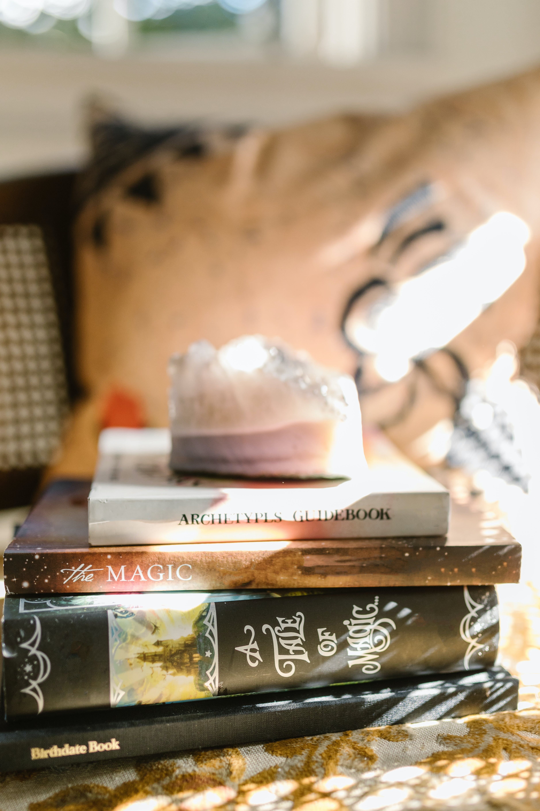

Introduction to Witchy Things

Witchcraft” is a word that, for some, may inspire fantastical images of women flying through the night sky on broomsticks and shooting sparks out of a glimmering wand. Others mistakenly associate people who practice Witchcraft with the dark arts—believing that Witches go around hexing people, or use other “black magic” to cause trouble for people they dislike. The truth is, Witchcraft is not fantasy, and is not inherently malicious. It’s a vibrant, nature-based spiritual practice that is alive and well in our modern times, just as it has been for longer than we’ve been recording history.
Introduction to Witchcraft
Witchcraft is a practice that dates back centuries, encompassing a diverse range of beliefs, traditions, and practices. Often misunderstood and misrepresented, witchcraft is fundamentally a spiritual or magical practice that seeks to harness natural energies to affect change in the world.
History and Origins
The history of witchcraft is complex and varied, with different cultures and societies developing their own unique traditions and beliefs. In Western history, witchcraft has often been associated with pagan and pre-Christian religions, as well as with folk magic and herbalism.
Beliefs and Practices
Beliefs and practices within witchcraft can vary widely, but many practitioners share a belief in the interconnectedness of all things and the idea that by working with natural energies, they can bring about positive change in their lives and the world around them. Common practices include ritual work, spellcasting, divination, and working with herbs and crystals.
Modern Witchcraft
In recent decades, there has been a resurgence of interest in witchcraft, fueled in part by a desire for connection to nature, spirituality, and a sense of empowerment. Modern witchcraft often incorporates elements of psychology, ecology, and feminism, emphasizing personal growth, environmental stewardship, and social justice.
Misconceptions and Stereotypes
Despite its long history and diverse practices, witchcraft is often misunderstood and misrepresented in popular culture. Many of the stereotypes associated with witchcraft, such as the idea of witches flying on broomsticks or casting curses, have little basis in reality and can be harmful to those who practice witchcraft.
Conclusion
Witchcraft is a rich and complex practice that has evolved over centuries, encompassing a wide range of beliefs and practices. Whether you are drawn to witchcraft for its spiritual aspects, its focus on personal empowerment, or its connection to nature, it is a practice that offers a wealth of wisdom and insight for those who are willing to explore it.
